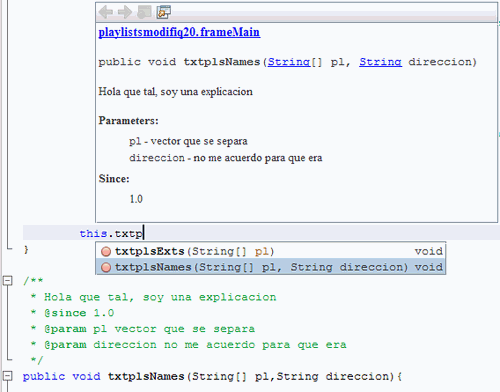

Crear Javadoc
Un Javadoc es un generador de documentación para API en HTML. Para los demás mortales: esa información que sale al escribir algun nombre de una variable/objeto/método seguido de un punto, seleccionando después el método que se quiere.
Estaba buscando por ahí cómo hacer eso pero con mis propios métodos/atributos/variables/objetos porque vamos, poner nombres super descriptivos y recontra super largos no da, pones cortos que más o menos te guien pero después de unos días ni sabes que hacen por ser algunos parecidos.
Un poquitito de búsqueda dió este resultado, cual lo transcribo y le pongo un par de imágenes para guiarlos ademas de un par de ejemplos.
Localizar lo que se quiere que tenga una explicación, yo voy a usar un
método pero puede ser una variable/objeto. Situarse sobre el nombre de
tal. Comenzar un comentario (/**) y den enter. Puede ser que les ponga algo por default, como los parámetros de un método. Acá se se escribe lo que se quiere, pongo algo de ejemplo:
/** * Hola que tal, soy una explicacion * @since 1.0 * @param pl vector que se separa * @param direccion no me acuerdo para que era */
Nótese que al poner @ se despliegan un par opciones, pero no creo que se necesiten mucho.
Ahora van a x lugar, empiezan a tipear y:

Qué lindo no? Ahora no tienen que estar adivinando qué hace,
qué retorna (si es true-false para hacer algo que no tiene que ver con
verdadero-falso).
Para los atributos/variables es lo mismo. No sé para qué puede servir pero si le pones nombres genéricos del estilo "a", "b", "foo1", "foo2", "foodos" y por el estilo, sirve.
How to comment
- Tweet with an URL to this post (
http://blog.aquinzi.com/./es/javadoc/) - Write a post linking here and send me a Webmention.
- With disqus